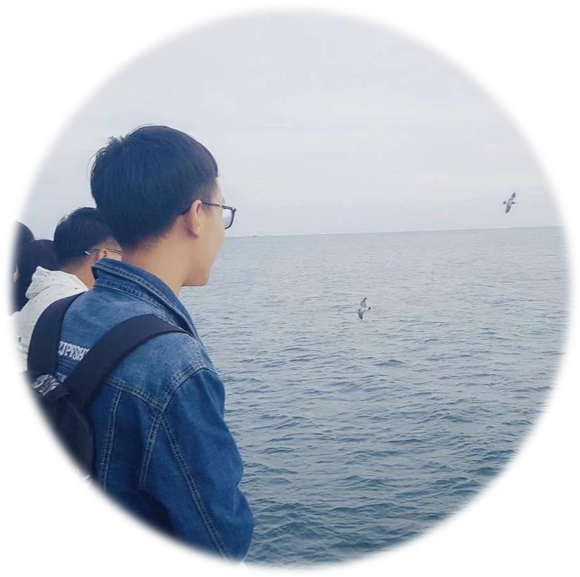

|
[English] 我是一名中国 复旦大学 计算机学院 的一年级博士生，我在姜育刚教授和 吴祖煊研究员的指导下在视觉与学习实验室 攻读博士学位。 我曾在天津大学 取得了学士学位，同时我在潘刚 教授的指导下在计算机视觉实验室研究。 我硕士就读于复旦大学，在周向东教授的指导下在大数据实验室研究。 |
 |
{kind=link}
|
我的研究兴趣主要是计算机视觉和人工智能。我目前的重点主要是在有限的监督下探索和进行计算机视觉基础研究， 目标是进行有益于人类的研究和设计产品。我很高兴能成为这个快速发展和迷人领域的一员，我希望能为它的发展做出贡献。 |

|
Zhen Xing, Zuxuan Wu*, Hengduo Li, Yu-Gang Jiang European Conference on Computer Vision(ECCV), 2022 [pdf] / [code] 我们首先为有价值的单视图三维重建任务提出了一种半监督的实验设置，为未来的半监督三维重建研究奠定了坚实的基础。 |

|
Zhen Xing, Yijiang Chen, Zhixin Ling, Xiangdong Zhou*, Yu Xiang European Conference on Computer Vision(ECCV), 2022 [pdf] / [code] 针对有监督的三维任务，引入了一种三维感知对比损失。 在小样本的实验设置下，我们的方法在ShapeNet和Pascal3D+数据集上全面达到最先进的实验效果。 |

|
Zhixin Ling, Zhen Xing, Xiangdong Zhou* European Conference on Computer Vision(ECCV), 2022 [pdf] / [code] 在四个数据集（即QMUL Shoe、QMUL Chair、QMUL-ShoeV2和Sketchy）上进行了综合实验。依据acc@1指标， 我们的方法大大优于以前的工作。 |

|
Zhixin Ling, Zhen Xing, et.al. ACM International Conference on Multimedia(MM), 2022 [pdf] / [code] 我们用多层次多区域匹配来解决细粒度的草图-图像检索问题，针对图片和草图，提出成对区域特征提取方法。 基于注意力机制，我们提出综合多层多区域特征匹配度的方法。 |

|
Zhidan Liu, Zhen Xing, Xiangdong Zhou*, Yijiang Chen ACM International Conference on Multimedia Retrieval(ICMR), 2022 [pdf] / [code] 我们提出了一种新的实验设置，实验性地报告了与现有的基于类别不可知图像的方法相比的最新结果（在ObjectNet3D数据集上提高了5%），证明了我们方法的有效性。 |

|
Yijiang Chen, Xiangdong Zhou, Zhen Xing, Zhidan Liu, Minyang Xu International Conference on Database Systems for Advanced Applications(DASFFA), 2022 [pdf] / [code] 实验结果表明，与以往的自监督MTS表示学习方法相比，我们的框架实现了新的最先进水平，可以很好地应用于下游多元时间序列分类。 |

|
Wenxu Li, Gang Pan*, Chen Wang, Zhen Xing, Zhenjun Han ACM Transactions on Multimedia Computing, Communications, and Applications(TOMM), 2021 [pdf] / [code] 我们收集了一个新的数据集，该数据集由具有细粒度动作和重要性注释的结构化游戏视频组成。实验结果证明了我们提出的基于强化学习的 方法的有效性。 |

|
研究型实习生, 微软亚洲研究院, 视觉计算组
2022 三月 - 至今 视频动作识别, 时序动作定位，半监督学习 |

|
算法开发岗, 中国汽车技术研究中心，智能网联平台部
2019 四月 - 2019 七月 目标检测, 路径规划算法 |
|
© 邢桢 | 最后更新时间: 2022 七月。 |